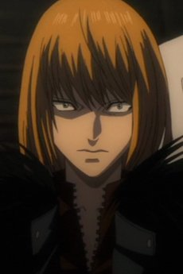

INICIO
CAPITULOS
DEATH NOTHE PERSONAJES
LIGHT YAGAMI
MISA AMANE
RYUK
REM
L. LAWLIET
NATHAN RIVER
MICHAEL KEEHL
KIYOMI TAKADA
TERU MIKAMI
Nayeli Ramírez Juárez todos los derechos reservados ©2015
|
MICHAEL KEEHL (MELLO)

Nació el 15 de diciembre de 1989, Mello tambien junto con Near,
es el sucesor de L. Comparte con Near el hecho de que ambos crecieron en un orfanato, ambos son superdotados, y ambos tienen
una obsesión, en el caso de Mello, el chocolate, el es temperamental, frío en ocasiones, tiene una personalidad impulsiva
siempre queriendo competir con Near tratando de ver quien podía encontrar a Kira primero . Sin embargo, es el más emocional
de todos los sucesores de L, de forma que sus actos son siempre extremos y poco reflexivos, ya que se mueve más por el impulso
del momento que por una verdadera reflexión.
Mello es el más empático de todos ellos, siendo incapaz de entender que alguien pueda hacer daño a otra persona a sangre
fría, pero precisamente por su impulsividad es él el que acaba realizando esto. Por esas razones Mihael parece tener un carácter
difícil y violento, debido a ser sociable y dinámico. Oculta sus sentimientos, debido a su pasado oscuro. Es asesinado por Takada
cuando la secuestra debido a ordenes que le da Light Yagami de que lo marara escribiendo en un trozo de la Death Nothe el nombre
completo de Mello.
|